Panorama Histórico do Brasileirão: Estatísticas, Confrontos e Disciplina em Duas Décadas de Competição (2003-2023).
Mergulhe em duas décadas de história do Campeonato Brasileiro! Este projeto apresenta uma análise completa da principal competição nacional, revelando padrões e detalhes sobre vitórias, derrotas, gols, disciplina e confrontos históricos entre os clubes. Com visualizações interativas e dados organizados, você poderá explorar o desempenho dos times, identificar os atletas mais decisivos e compreender o comportamento disciplinar das equipes ao longo dos anos. Um retrato fiel da evolução do futebol brasileiro entre 2003 e 2023.
Detalhes do Projeto
Ao longo deste projeto, realizei uma análise completa sobre o Campeonato Brasileiro entre os anos de 2003 a 2023, com o objetivo de extrair resultados interessantes a partir de um grande volume de dados esportivos. A jornada começou com a exploração e manipulação de dados por meio de queries SQL, onde desenvolvi perguntas de negócio como: Quais os times com maior número de vitórias? Quais atletas marcaram mais gols de pênalti? Como evoluiu a disciplina dos clubes ao longo dos anos? As respostas geradas a partir dessas queries serviram de base para a construção de uma apresentação com storytelling, estruturando os achados de forma lógica e visualmente atrativa.
Posteriormente, levei essa análise para um novo nível através do Power BI, criando um dashboard interativo e visual com foco em facilitar a compreensão dos dados por qualquer tipo de usuário. O processo envolveu diversas etapas do ciclo de dados: desde a modelagem relacional entre diferentes tabelas, até o tratamento e limpeza dos dados no Power Query, incluindo a criação de colunas auxiliares e ajustes de formatação.
Utilizei colunas calculadas e medidas DAX para consolidar indicadores importantes como total de partidas, gols, cartões, média de posse de bola, entre outros. Também apliquei boas práticas de modelagem de dados, criando relacionamentos otimizados entre tabelas como
tb_brasileirao, tb_gols, tb_cartoes e outras auxiliares que enriqueceram a análise, como a tabela de Arenas e Jogadores.
O resultado final foi dividido em três páginas principais:
• Visão Geral, com foco em desempenho dos clubes, gols e posse de bola;
• Análise Disciplinar, detalhando o comportamento dos atletas e clubes em relação a cartões;
• Histórico de Confrontos, apresentando os resultados e locais das partidas disputadas.
• Visão Geral, com foco em desempenho dos clubes, gols e posse de bola;
• Análise Disciplinar, detalhando o comportamento dos atletas e clubes em relação a cartões;
• Histórico de Confrontos, apresentando os resultados e locais das partidas disputadas.
O dashboard conta com mapas interativos, gráficos, tabelas dinâmicas e uma barra lateral que facilita a navegação entre as páginas. Com ele, é possível visualizar os dados de forma clara, interativa e intuitiva, facilitando a análise até mesmo para quem não tem familiaridade com o tema. Esse projeto demonstra como a combinação entre SQL e Power BI pode transformar dados em representações visuais e acessíveis para todos.
Confira mais detalhes nos links abaixo:
Repositório no GitHub
Artigo completo no Medium
Dashboard Completo
Publicação no LinkedIn (SQL)
Galeria de Imagens
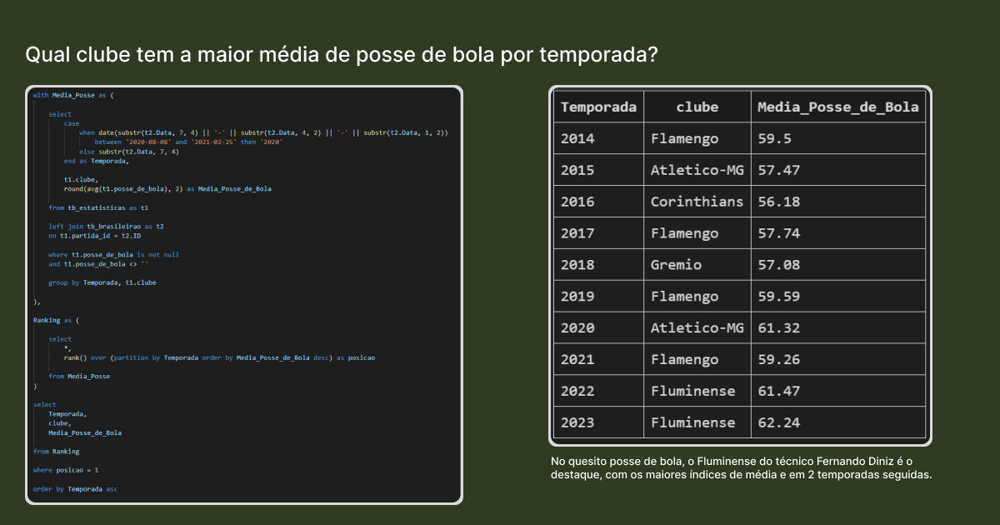
Exemplo de query desenvolvida no projeto.
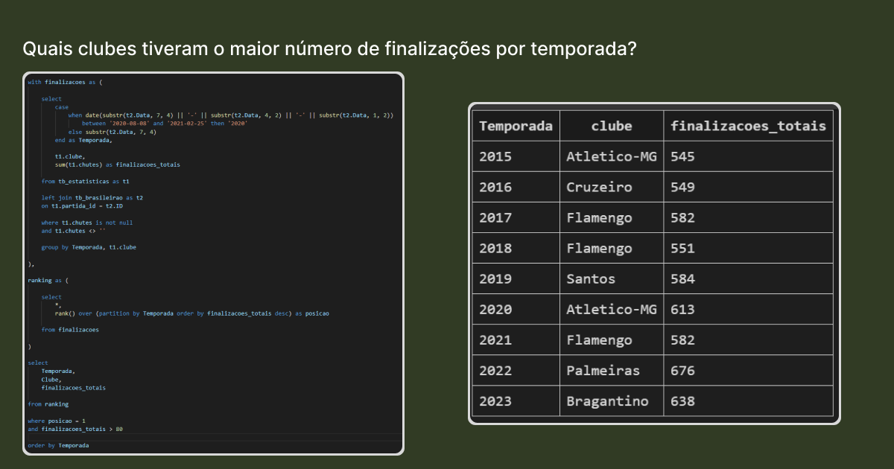
Exemplo de query desenvolvida no projeto.
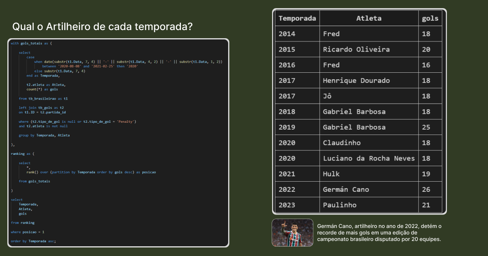
Exemplo de query desenvolvida no projeto.
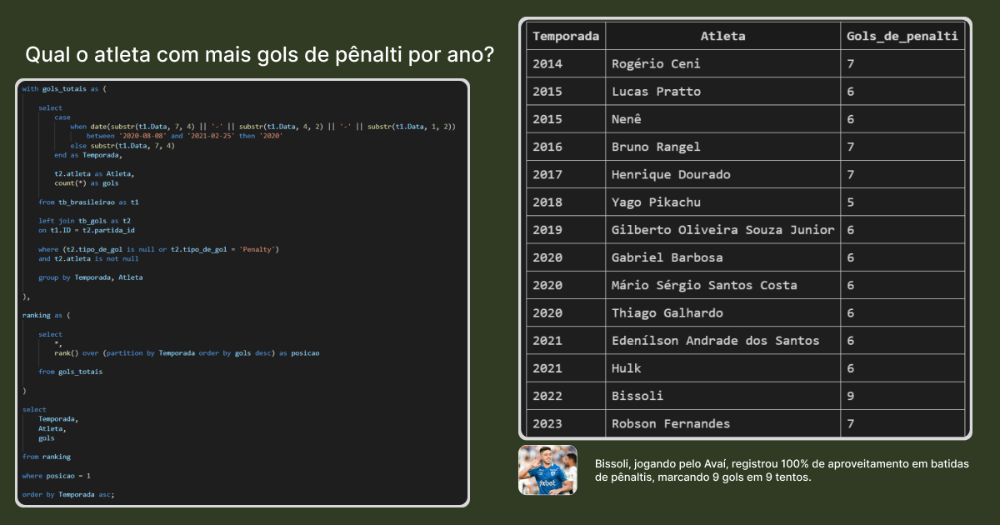
Exemplo de query desenvolvida no projeto.
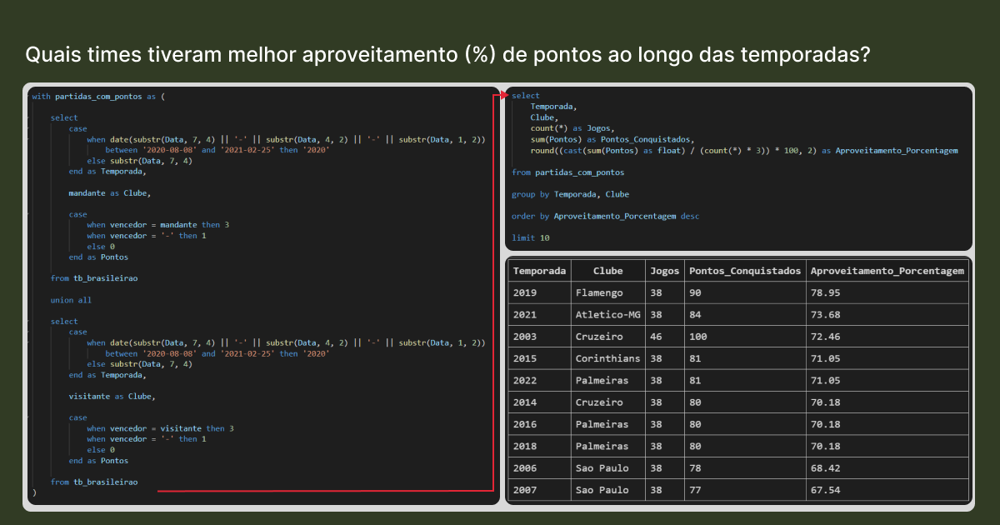
Exemplo de query desenvolvida no projeto.
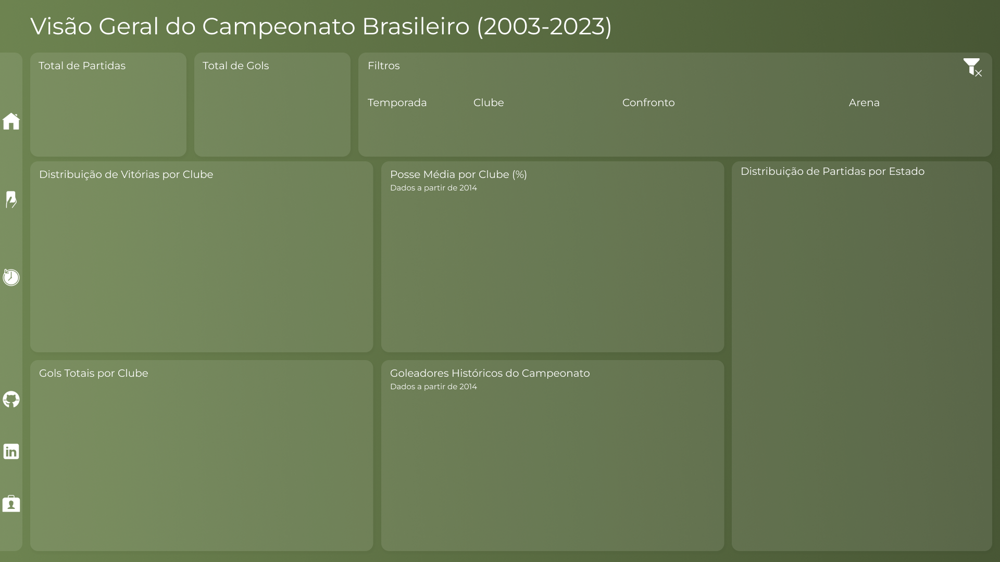
Design da página inicial do projeto no Power BI.
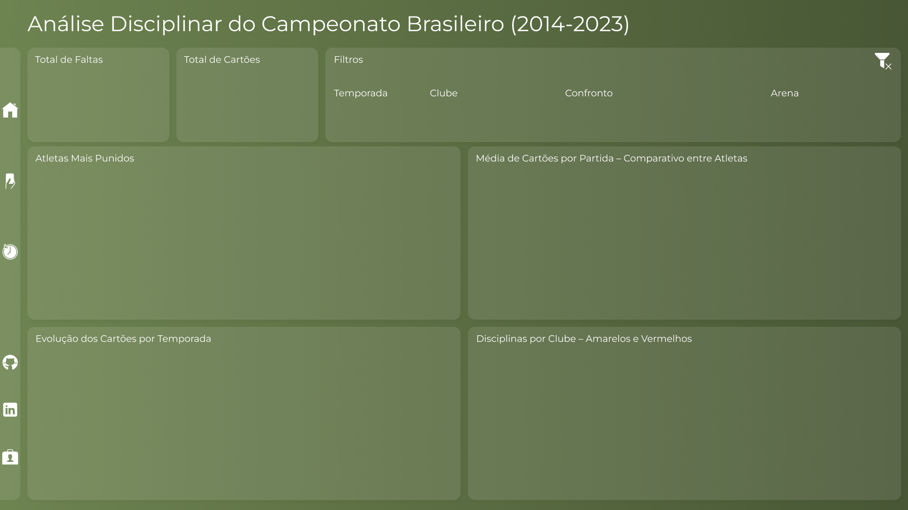
Design da página de análise disciplinar do projeto no Power BI.
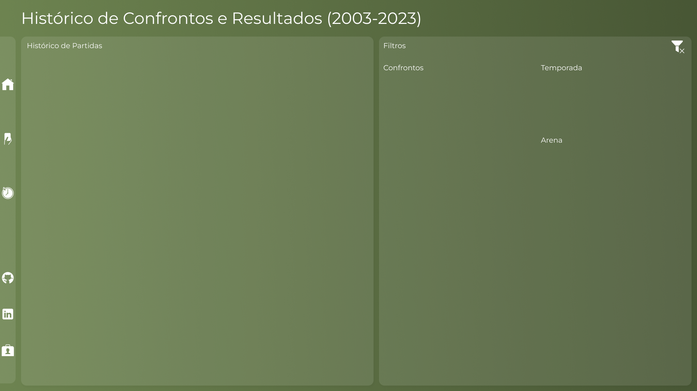
Design da página do histórico de confrontos do projeto no Power BI.
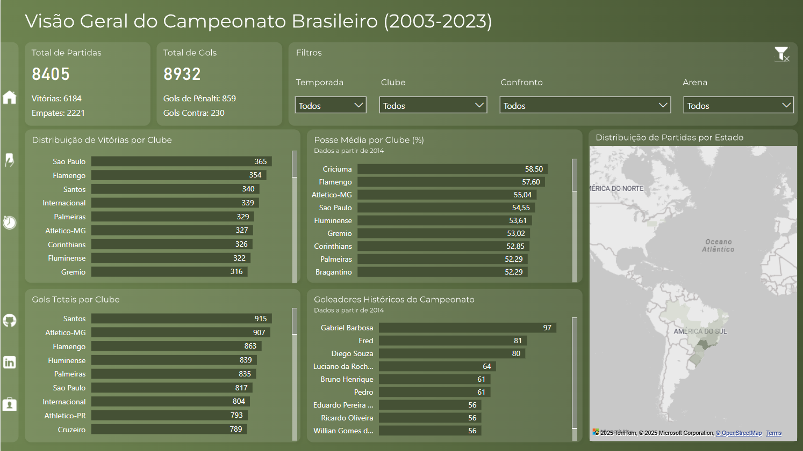
Resultado Final: Página - Visão Geral.
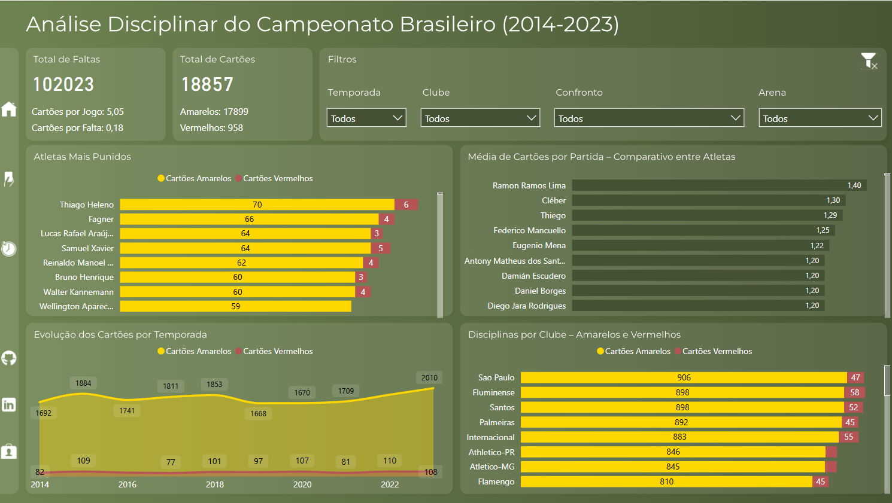
Resultado Final: Página - Análise Disciplinar.
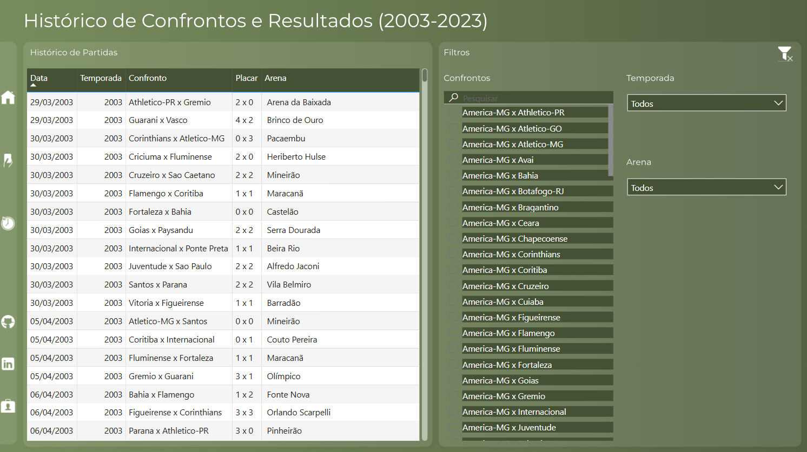
Resultado Final: Página - Histórico de Confrontos.